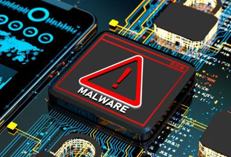

Download acidental de Malware: Um alerta para Crianças e Adolescentes
O mundo digital é uma parte cada vez mais integrada da vida de crianças e adolescentes. Com o acesso a smartphones, tablets e computadores, esses jovens têm a oportunidade de aprender, se conectar e se divertir online. No entanto, essa interação com a tecnologia também traz consigo riscos significativos, como o download acidental de malware. Neste artigo, exploraremos os perigos associados a esse fenômeno e forneceremos orientações sobre como proteger crianças e adolescentes no ambiente digital.
Os perigos do Malware para Crianças e Adolescentes
Malware, que é uma abreviação para "software malicioso," inclui vírus, trojans, spyware e outros programas desenvolvidos com intenções maliciosas. O download acidental de malware pode resultar em várias consequências prejudiciais para crianças e adolescentes:
- Roubo de informações pessoais: O malware pode coletar informações pessoais, como senhas, números de cartão de crédito e dados de identificação, que podem ser usados para cometer fraudes online.
- Ameaças à privacidade: Alguns tipos de malware permitem que invasores acessem a câmera ou o microfone do dispositivo, comprometendo a privacidade dos jovens.
- Danos aos dispositivos: O malware pode causar danos ao dispositivo, tornando-o lento, inoperável ou sujeito a falhas frequentes.
- Assédio cibernético: Os criminosos podem usar o malware para espionar as atividades online das crianças e adolescentes, resultando em formas de assédio cibernético.
- Exposição a conteúdo inadequado: Alguns malware direcionam os usuários a sites ou aplicativos com conteúdo inadequado para a idade, expondo-os a experiências prejudiciais.
Como proteger Crianças e Adolescentes
É crucial que pais, responsáveis e educadores estejam cientes dos riscos do malware e tomem medidas para proteger as crianças e adolescentes:
- Educação: Ensine os jovens sobre os perigos do malware e como identificar ameaças online. Explique que eles devem evitar clicar em links suspeitos ou fazer download de aplicativos de fontes não confiáveis.
- Antivírus: Instale software antivírus confiável em dispositivos pessoais e mantenha-o atualizado regularmente.
- Atualizações de software: Certifique-se de que os dispositivos estejam sempre com o sistema operacional e aplicativos atualizados. As atualizações frequentemente incluem correções de segurança.
- Restrições de download: Configure restrições nos dispositivos para impedir o download de aplicativos não autorizados.
- Comunicação aberta: Incentive uma comunicação aberta com crianças e adolescentes, para que eles se sintam à vontade para relatar qualquer atividade suspeita.
- Monitoramento: Monitore o uso dos dispositivos e verifique regularmente quais aplicativos estão instalados./li>
O download acidental de malware é uma ameaça real para crianças e adolescentes no ambiente digital. A educação e a supervisão dos pais e responsáveis desempenham um papel fundamental na proteção desses jovens contra essas ameaças. Ao adotar práticas de segurança online e manter uma comunicação aberta, podemos garantir que crianças e adolescentes desfrutem de uma experiência digital mais segura e positiva.